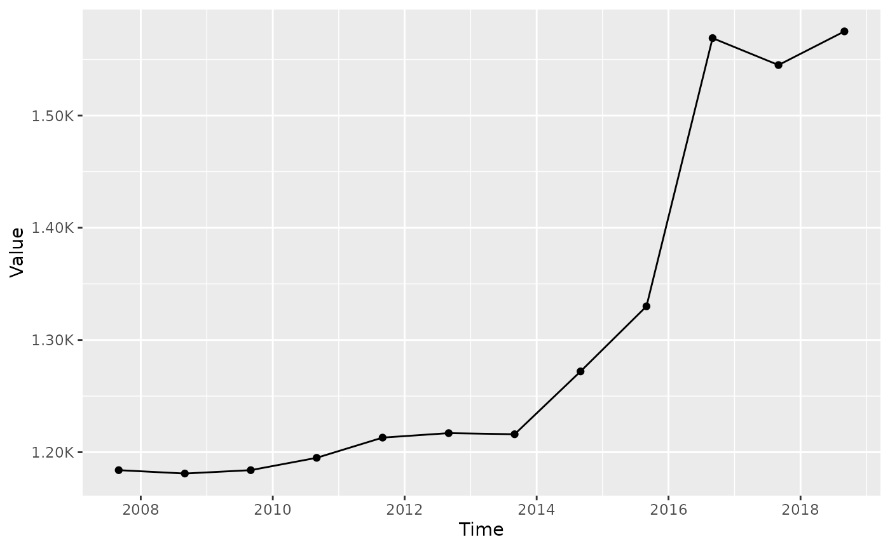
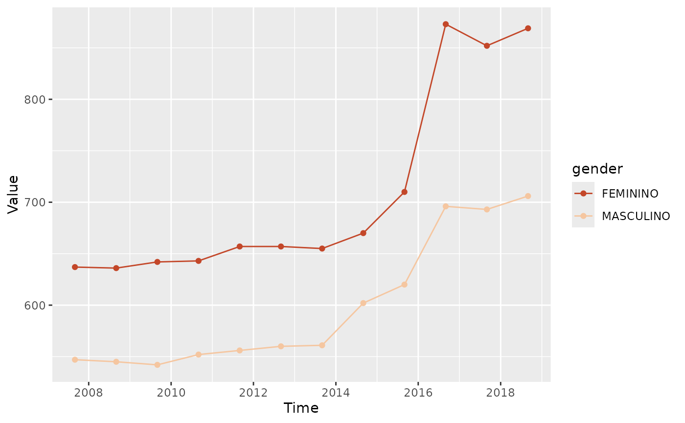
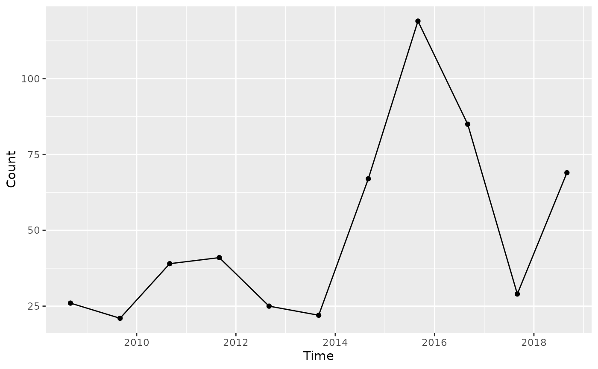
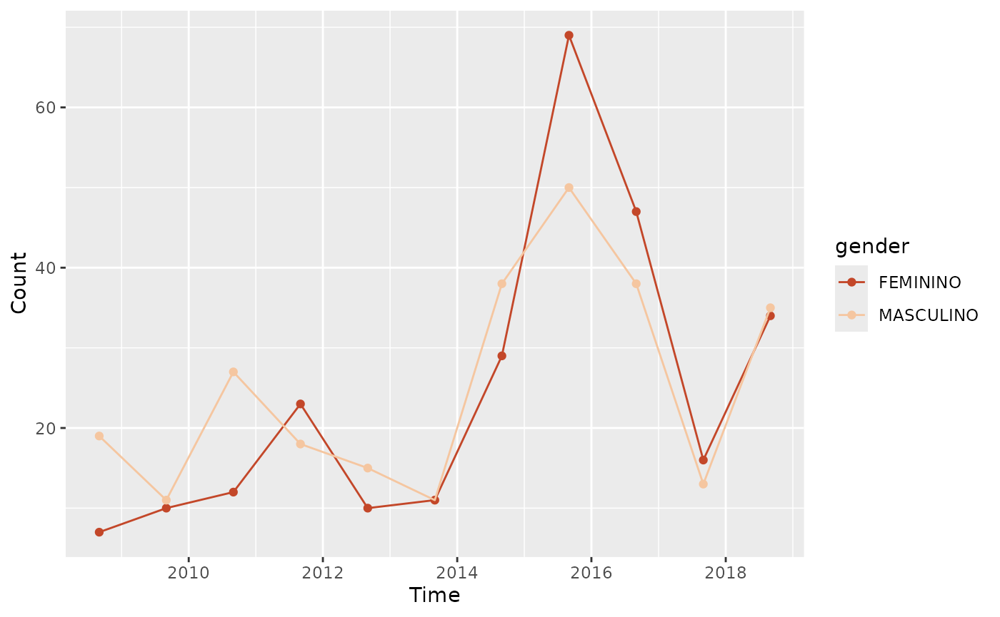
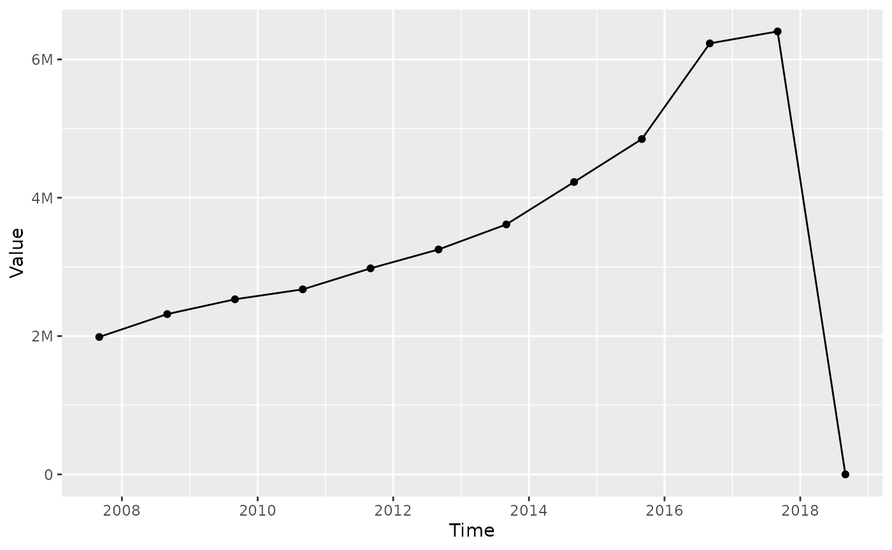
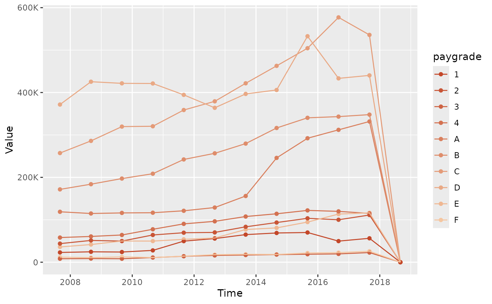

Analytics on the workforce and wagebill
03-analytics.Rmd##
## Attaching package: 'dplyr'## The following objects are masked from 'package:stats':
##
## filter, lag## The following objects are masked from 'package:base':
##
## intersect, setdiff, setequal, unionAnalytics
Once data are harmonized, analytics helps governments answer specific policy questions: How compressed is the wage structure? Is the workforce growing or shrinking? How is headcount distributed across groups?
govhr provides functionalities that enable users to
generate analytics, along with companion plotting functions to visualize
them. Broadly speaking, we differentiate between analytics on the
workforce and the wagebill. Workforce analytics focus on the
composition, growth, and distribution of personnel, while wagebill
analytics examine patterns and trends in compensation (e.g., base
salaries, allowances).
The following examples illustrate how to leverage govhr
to generate analytics.
Workforce analytics
When analyzing the workforce, a first order concern is understanding time trends in headcount. One way to do this is to compute the total headcount by reference date, allowing the user to visualize the trajectory of the public sector workforce over time.
The function compute_time_trend and its companion
plotting function plot_trend allow users to quickly
generate this type of analysis.
# total headcount by reference date
headcount_trend <- compute_time_trend(
govhr::bra_hrmis_personnel,
group = "ref_date"
)
plot_trend(headcount_trend, group = "ref_date")
You might also be curious about how time trends for headcount varies
across groups, such as gender. Modifying the group argument
makes that possible. Note that implicitly the function will still take
the reference date into account.
# total headcount by reference date and gender
headcount_trend_gender <- compute_time_trend(
govhr::bra_hrmis_personnel,
group = c("gender")
)
plot_trend(headcount_trend_gender, group = c("gender"))
Movement
Beyond the stock of personnel, governments are often interested in
the flows of personnel into and out of the public sector. The
compute_workforce_movement function allows users to compute
the number of new hires and separations by reference date, while the
companion plotting function plot_movement visualizes these
flows.
movement_hire_count <- compute_workforce_movement(
govhr::bra_hrmis_personnel,
movement_type = "hire",
measurement_type = "count",
group_cols = "ref_date"
)
plot_movement(
movement_hire_count,
movement_type = "hire",
measurement_type = "count",
group = "ref_date"
)
Again, if you are interested in how these flows vary across groups, you can modify thegroup_cols argument to include additional
grouping variables.
movement_hire_gender_count <- compute_workforce_movement(
govhr::bra_hrmis_personnel,
movement_type = "hire",
measurement_type = "count",
group_cols = c("ref_date", "gender")
)
plot_movement(
movement_hire_gender_count,
movement_type = "hire",
measurement_type = "count",
group = "gender"
)
Wagebill analytics
Most of the analysis presented in the workforce analytics section can
be replicated for the wagebill. For example, the
compute_time_trend function can be used to compute the
total wagebill by reference date, while the plot_trend
function can visualize that trend.
# total wagebill by reference date
wagebill_trend <- compute_time_trend(
govhr::bra_hrmis_contract,
group = "ref_date",
measure_col = "gross_salary_lcu"
)
plot_trend(wagebill_trend, group = "ref_date")
A similar differentiation by group is possible, using the same
grammar for the group argument.
# total wagebill by reference date
wagebill_paygrade_trend <- govhr::bra_hrmis_contract |>
filter(!is.na(paygrade)) |>
compute_time_trend(
group = "paygrade",
measure_col = "gross_salary_lcu"
)
plot_trend(wagebill_paygrade_trend, group = "paygrade")
Equity
Generally, equity analyses focus on whether different groups of personnel are compensated fairly. It also includes analyses of whether the wage structure is compressed, meaning that the gap between the highest and lowest earners within a group is small.
A compressed wage structure can indicate that the government is paying its employees more equitably, but it can also suggest that there is little differentiation in pay based on experience or performance. How to interpret the findings of this equity analysis depends on the policy preferences of governments and their public sector workers.
# wage compression: ratio between the 90th and 10th percentile of gross salary,
# tracked over time
compression_ratio <- compute_compression_ratio(
bra_hrmis_contract,
measure_col = "gross_salary_lcu"
)
plot_compression_ratio(compression_ratio)